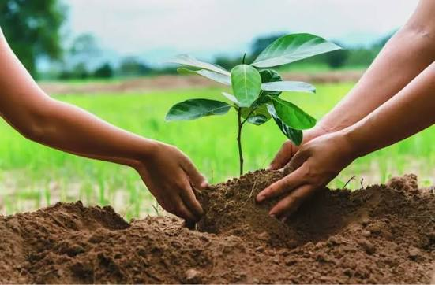
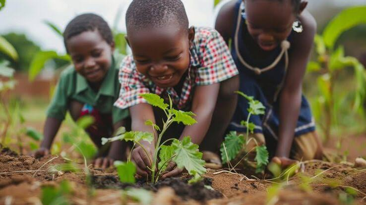
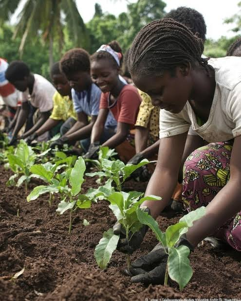
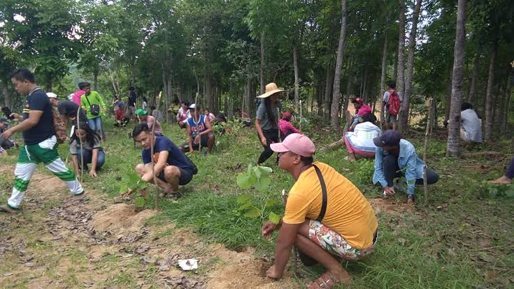

I am a 33-year-old medical doctor from Gwaram LGA, Jigawa State Nigeria. I completed my primary education at Dutse Capital School and my secondary education at Dutse Model International School both in Dutse. I earned my medical degree from October 6 University in 6th of October City, Egypt.
Beyond medicine, I am passionate about environmental sustainability and climate action. I am committed to supporting efforts to combat climate change by promoting reforestation, preventing deforestation, and advocating for practical solutions to reduce soil erosion and protect our natural environment for future generations.
Growing up in a community where deforestation, flooding, and rising temperatures were becoming increasingly common, I developed a deep concern for the environment. Witnessing the loss of trees and its impact on local livelihoods inspired me to learn more about climate change and the importance of restoring natural ecosystems.
Through volunteering in community clean up and tree planting activities, I discovered a passion for reforestation as a practical solution to environmental degradation. Today, I am committed to promoting sustainable practices, raising awareness about climate change, and leading initiatives that restore forests, protect biodiversity, and create a healthier environment for present and future generations.
Our vision for reforestation is to restore degraded landscapes, combat climate change, and create a greener future for generations to come. Through tree planting and environmental awareness, We aim to inspire communities to take collective action in protecting nature and rebuilding healthy ecosystems that support both people and wildlife.
This vision is already taking root. So far, We have successfully planted 245 trees, contributing to environmental restoration and carbon capture efforts in my community. Each tree represents a step toward a more sustainable future, and this achievement motivates me to continue expanding reforestation efforts and encouraging others to join the movement.




Configure EmailJS to send registrations to greenrootsng@gmail.com.
Account Name: Abdullahi Musa Abubakar
Account Number: 2083831241
Bank Name: Zenith Bank
Email: greenrootsng@gmail.com